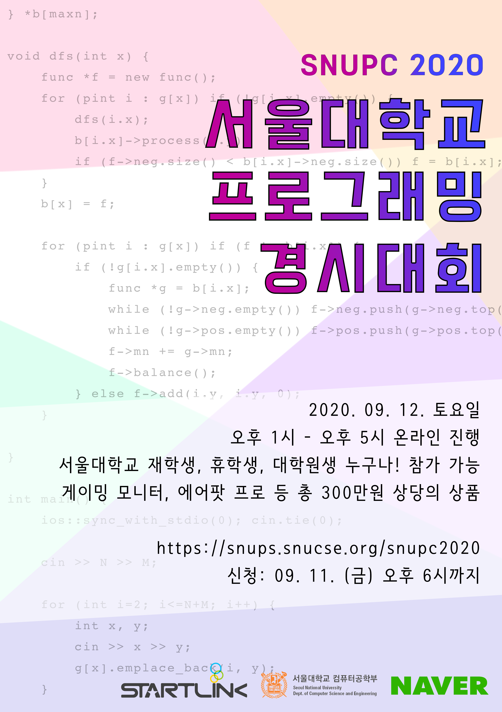

개요
SNUPC 2020은 서울대학교 컴퓨터공학부 문제풀이 및 알고리즘 동아리 SNUPS에서 주최하고 NAVER, 서울대학교 컴퓨터공학부와 스타트링크가 후원하는 컴퓨터 프로그래밍 경시대회입니다.
주어진 시간 내에 정해진 문제들을 많이 풀어내는 것으로 경쟁합니다. 주로 자료구조, 알고리즘, 수학 지식과 아이디어를 활용하여 알고리즘을 설계하고 프로그램을 작성하게 됩니다.
- 주최 및 주관: SNUPS
- 후원: NAVER, 서울대학교 컴퓨터공학부, 스타트링크
일정
- 신청 :
8월 26일 (수) 12시 ~ 9월 11일 (금) 18시마감 - 대회 : 2020년 9월 12일 (토) 13:00 ~ 17:00
- 결과 발표 및 시상 : 2019년 9월 12일 (토) 17:10 ~
장소
COVID-19의 여파로, SNUPC 2020은 전면 온라인으로 개최합니다. 상세한 대회 참여 방법은 추후 안내하겠습니다.
분야
- Division 2, Division 1 두 개의 분야로 나뉘어 대회가 진행됩니다.
- 참가자는 두 분야 중 하나의 분야를 골라 참가할 수 있습니다.
Division 2
- 기초 수준의 알고리즘 지식을 갖고 있으며, 프로그래밍 대회가 익숙하지 않은 사람들을 위한 대회입니다.
- 비교적 낮은 수준의 알고리즘 지식과 사고력, 구현 능력을 요구하는 문제가 출제됩니다.
Division 1
- 충분한 알고리즘 지식과 온/오프라인 프로그래밍 대회 경험을 갖춘 사람들을 위한 대회입니다.
- 온라인 대회 플랫폼의 Div 1 대회 참가 자격이 있거나 그에 근접한 사람(Codeforces의 경우 rating 1900 이상)에게 권장합니다.
- 다양한 분야에서 일반적인 난이도의 문제가 출제됩니다.
- Div 2에 비해 더 많은 상품과 경품이 주어집니다.
상품
본상 : Division 1
- 1등 : 삼성전자 C32JG54 게이밍모니터
- 2~3등 : 애플 에어팟 프로
- 4~6등 : JBL Flip 5 블루투스 스피커
- 7~10등 : Sandisk Extreme Portable SSD E60
- 11~15등 : 삼성전자 15W 스탠드 무선충전기 EP-N5200
본상 : Division 2
- 1등 : JBL Flip 5 블루투스 스피커
- 2~4등 : Sandisk Extreme Portable SSD E60
- 5~9등 : 삼성전자 15W 스탠드 무선충전기 EP-N5200
특별상
- 문제별로 다양한 기준을 통해 선발하여 증정
- 각 2만원 상당의 경품
- 본상 수상자를 제외한 인원 중 선발
참가상
- 참가자 전원에게 배스킨라빈스 싱글킹 아이스크림 기프티콘 제공
규정
참가 자격
- 서울대학교 학생이면 학과와 상관없이 누구나 참가 가능합니다. 대학원생, 휴학생도 포함합니다.
- 서울대학교 학생이 아니라면 참가할 수 없습니다.
- C, C++, Java 또는 Python으로 페이지 하단에 제공된 샘플 문제 같은 문제들을 풀 수 있어야 합니다.
대회 진행
- 기본적으로 2020 한국 대학생 프로그래밍 경시대회의 방식을 따릅니다.
반드시 여기에서 관련 내용을 확인하여야 합니다.
- 단, 개인전으로 진행합니다.
- 진행 시간: 4시간
- 사용 언어 : C11, C++14, C++17, Java 8, Java 8 (OpenJDK), Python 3.8.2, PyPy3 (Python 3.6.9)
- C++14 혹은 C++17 이외의 언어로 풀 수 있음이 보장되지 않습니다.
- 대회 플랫폼 : Baekjoon Online Judge
- 인터넷 검색 및 미리 작성한 코드 사용을 허용합니다.
- 대회 도중 외부인과의 통신이나, 타 응시자의 코드 카피가 확인될 경우 부정행위로 간주할 수 있습니다.
대회 환경
채점 서버 환경
- CPU : Intel(R) Xeon(R) CPU E5-2666 v3 @ 2.90 GHz
- RAM : 3.75 GB
- OS : Ubuntu 16.04.6 LTS
출제경향
- ACM-ICPC 대회의 경향을 따르며 8~13문제 정도가 출제됩니다.
- 이전 SNUPC 문제는 여기에서 확인할 수 있습니다.
부정행위 등의 경우
- 상품을 받을 기회를 박탈당하고, 대회 참가가 무효 처리될 수 있습니다. 정도에 따라 이후 대회 참가가 제한될 수 있습니다.
등록
- 신청해주신 분께는 개별적으로 확인 문자를 넣어드립니다.
- 참가하지 못하게 된 경우 꼭 연락해 주세요.
문의
- snups@snucse.org
- 010-9291-6787 (SNUPS 부회장 윤창기)
샘플 문제
참가 신청 마감
신청 현황
홍보 포스터
